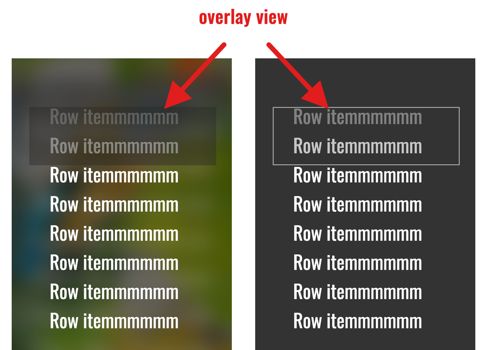

리스트를 구성하다 보면 다음과 같이 상단 부분만 Alpha를 주고 싶은 경우가 있습니다.

RecyclerView에 다음 속성만 추가하면 위 아래로 Edge가 적용 되는데
android:fadingEdge=”horizontal”
android:fadingEdgeLength=”100dp”
android:requiresFadingEdge=”vertical”
위쪽만 주고싶다면 다음 순서에 맞게 코드를 작성하시면 됩니다.
RecyclerView를 커스텀하는 class를 하나 파서 다음과 같이 만듭니다.
class CustomRecyclerView(
context: Context,
attrs: AttributeSet?
) : RecyclerView(context, attrs) {
//하단 Alpha 제거
override fun getBottomFadingEdgeStrength(): Float {
return 0f
}
}만약에 상단 Alpha값을 제거 하고 싶으면 다음 코드만 추가합니다.
override fun getTopFadingEdgeStrength(): Float {
return 0f
}그 이후로 적용하고 싶은 레이아웃 파일로 들어가서 CustomRecyclerView를 쓰면 됩니다.
<CustomRecyclerView>
android:layout_width="match_parent"
android:layout_height="match_parent"
</CustomRecyclerView>